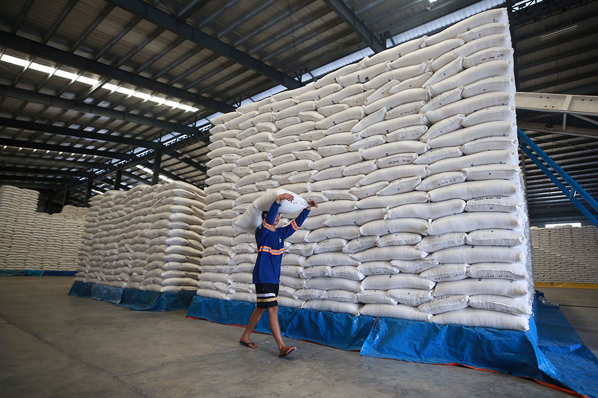

NFA palay buying stuck at about 25% of target as yields fall
25 Nov 2026 · BusinessWorld
NFA Administrator Larry Lacson said procurement is at 22–25% of the 790,000 MT target for the year, with current palay stock around 175,000 MT (about 3.5 million bags). He blamed weaker yields on reduced fertilizer use, tied to Middle East disruptions, and on habagat weather. PSA data show palay production fell 17.8% year on year in Q3. NFA wants another 380,000 MT to support the ₱20/kg “Benteng Bigas, Meron Na!” program and reserves, and has storage for about 600,000 MT.
Operator read: a smaller local harvest plus a government buyer chasing the same palay means less slack in local rice. Buy forward for December–January where you can and keep a second supply source ready.